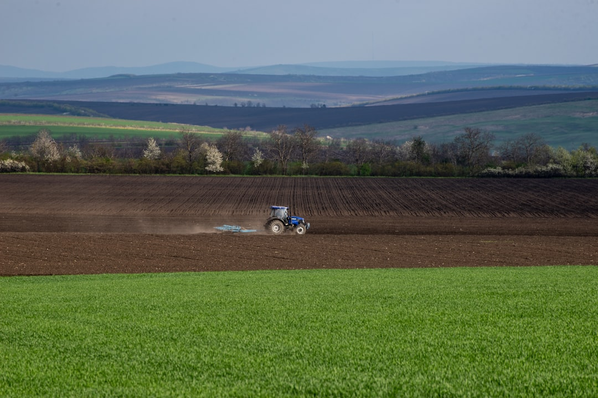

Как выбрать минитрактор

В этом руководстве вы узнаете, как правильно выбрать минитрактор, исходя из ваших задач, бюджета и условий эксплуатации. Мы рассмотрим ключевые характеристики, типы техники и дадим практические рекомендации, чтобы ваша покупка была максимально эффективной.
Прежде чем приступить к выбору, составьте список всех работ, которые вы планируете выполнять с помощью минитрактора. Укажите площадь участка, тип почвы, наличие уклонов, а также сезонность использования. Это поможет точно определить необходимую мощность, тип привода, массу и комплектацию навесного оборудования. Например, для обработки большого поля потребуется более мощная машина, чем для ухода за газоном на даче.
Мощность двигателя напрямую зависит от сложности и объема предстоящих работ. Для небольших дачных участков и легких задач (кошение травы, перевозка небольших грузов) достаточно минитрактора мощностью 15-25 л.с. Если планируется пахота, боронование на больших площадях (2-6 гектаров) или работа с тяжелым навесным оборудованием, выбирайте модели мощностью 30-50 л.с. Дизельные двигатели экономичнее и обеспечивают больший крутящий момент на низких оборотах, что важно для стабильной работы с фрезой или снегоуборщиком.
Тип трансмиссии влияет на удобство и эффективность работы. Механическая коробка передач является более простой, надежной и ремонтопригодной, она хорошо подходит для полевых работ и транспортировки грузов. Гидростатическая трансмиссия обеспечивает плавное изменение скорости и направления движения, что делает ее идеальной для коммунальных работ, где требуется частая смена направления, например, при работе с фронтальным погрузчиком или щеткой. Наличие реверса в коробке передач значительно повышает производительность при использовании активного навесного оборудования.
Выбор привода зависит от условий, в которых будет эксплуатироваться минитрактор. Заднеприводные модели (2WD) подходят для работы на твердом грунте и газоне, они экономичнее и проще в обслуживании. Полноприводные минитракторы (4WD) незаменимы для пахоты, работы на уклонах, в условиях снега или при буксировке тяжелых прицепов по бездорожью. 4WD обеспечивает лучшую проходимость и тягу на рыхлых и влажных почвах, но увеличивает стоимость техники и расход топлива.
Масса минитрактора играет ключевую роль в его тяговых характеристиках и стабильности. Более тяжелая машина обеспечивает лучшее сцепление с грунтом, меньшую пробуксовку и более глубокую обработку почвы. Однако для работы на мягких газонах избыточный вес может быть вреден, оставляя следы. Габариты также важны: убедитесь, что минитрактор сможет свободно перемещаться по вашему участку, проезжать в ворота и под низкими строениями.
Навесное оборудование расширяет функциональность минитрактора и является половиной его пользы. Составьте перечень необходимого оборудования под ваши задачи: плуг, почвофреза, косилка, прицеп, отвал для снега, снегоуборщик, щетка. Убедитесь в совместимости навески с выбранным минитрактором по типу трехточечной навески (категория 0 или 1), мощности ВОМ (вала отбора мощности), гидровыходам, массе и габаритам.
При выборе минитрактора обязательно уточните наличие сервисных центров, доступность запасных частей и расходных материалов в вашем регионе. Легкий доступ к фильтрам, ремням и другим элементам для обслуживания значительно упростит эксплуатацию и снизит затраты на ремонт. Наличие официального дилера с собственным складом запчастей и квалифицированными специалистами может сэкономить время и нервы в случае поломки.
Скачать PDF-версию Обсудить с экспертомПодводные камни
- Ошибка 1: Выбор минитрактора только по мощности. Часто покупатели ориентируются исключительно на количество лошадиных сил, забывая о массе и типе привода. Недостаточная масса приводит к пробуксовкам и неэффективной работе, даже при высокой мощности. Избежать этого можно, сопоставляя мощность с массой машины и типом выполняемых работ.
- Ошибка 2: Игнорирование типа трансмиссии. Механическая коробка передач для коммунальных задач или гидростат для пахоты - это неэффективно. Выбирайте трансмиссию, соответствующую основным видам работ.
- Ошибка 3: Недооценка важности навесного оборудования. Покупка минитрактора без учета совместимости с необходимым навесным оборудованием может привести к дополнительным тратам или невозможности выполнения определенных задач. Всегда планируйте комплект "трактор + навеска" одновременно.
- Ошибка 4: Отсутствие проверки доступности сервиса и запчастей. Приобретение техники без развитой сервисной сети в регионе может обернуться длительными простоями и сложностями с ремонтом. Уточняйте этот вопрос заранее.
- Ошибка 5: Экономия на качестве резины и фильтров. Эти компоненты напрямую влияют на производительность и ресурс минитрактора. Дешевые аналоги могут привести к быстрому износу и поломкам.
Итог
Правильный выбор минитрактора - это инвестиция, которая окупится эффективностью и долговечностью. Внимательно подойдите к каждому шагу, чтобы приобрести технику, которая идеально соответствует вашим потребностям и задачам.